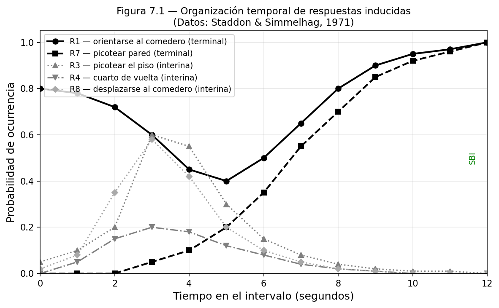
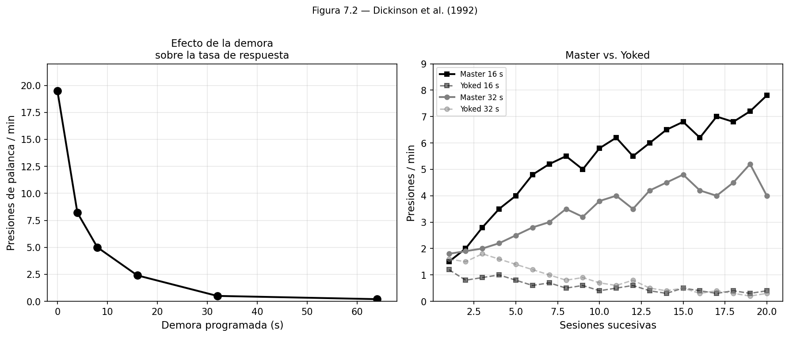
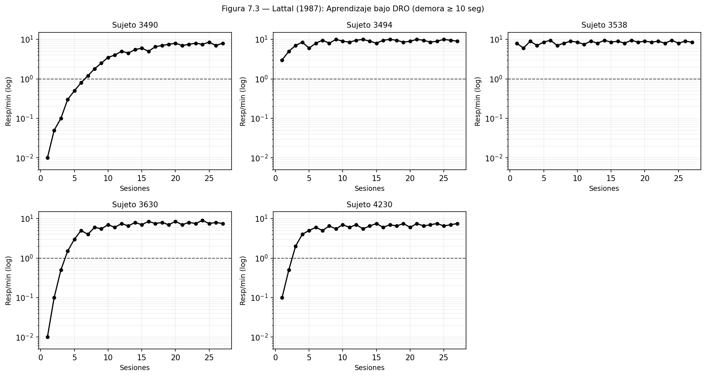
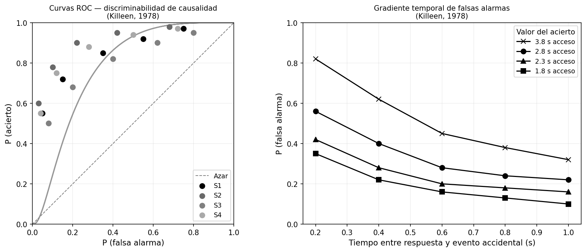

9 El Problema de la Asignación de Crédito (II)
9.1 Acciones, Inducción y el Problema del Control
Al final del capítulo anterior dejamos al organismo en posesión de una capacidad importante pero parcial: puede predecir cuándo va a llover mirando el cielo, puede anticipar el ataque de un depredador al escuchar su rugido, puede aprender que ciertos sabores preceden al malestar. Esa capacidad predictiva tiene un valor enorme, pero tiene también un límite preciso: el organismo no controla el cielo, no controla la presencia del depredador, no controla los sabores que encuentra. Puede prepararse para lo que viene, pero no puede alterar lo que viene.
Uno de los saltos más importantes en la historia evolutiva fue la emergencia de mecanismos que, a través de la acción y la interacción con el entorno, permiten a los organismos no solo predecir sino controlar la ocurrencia de sucesos biológicamente importantes. Un organismo que aprende no solo que el cielo nublado anuncia lluvia, sino que llevar paraguas produce la consecuencia de llegar seco, ha adquirido algo cualitativamente distinto. La lluvia sigue siendo independiente de él; pero la consecuencia de llegar empapado ya no lo es. Entre la acción del organismo y el resultado hay ahora una relación de dependencia que puede ser aprendida, explotada y perfeccionada.
Este es el problema adaptativo que nos ocupa: ¿cómo aprende un organismo que sus propias acciones producen sucesos biológicamente importantes? Y, antes de eso, ¿de dónde vienen las acciones entre las que puede elegir?
9.2 Thorndike y dos preguntas que se confundieron durante décadas
A principios del siglo XX, Edward Thorndike encerró gatos en cajas de escape desde las que el animal podía salir accionando un cerrojo, tirando de una cuerda o pisando una palanca. El patrón fue consistente: al inicio los gatos tardaban mucho, probando un repertorio amplio de respuestas antes de dar con la correcta por casualidad; con la repetición, ese tiempo disminuía hasta que el animal accionaba el dispositivo casi inmediatamente. Thorndike llamó a esto aprendizaje por ensayo y error.
Pero los datos contienen dos observaciones distintas. La primera: el gato hace algo al ser encerrado. No se queda inmóvil, no selecciona al azar de toda la gama posible de movimientos de un cuerpo en el espacio. Explora, araña, empuja, vocaliza —respuestas apropiadas a la situación de escape, no al cortejo ni a la alimentación. La segunda: de ese repertorio inicial, el animal selecciona progresivamente la respuesta que abre la caja. Son fenómenos distintos: uno sobre el origen de la variabilidad conductual, otro sobre su selección.
La Ley del Efecto de Thorndike intentó responderlos con el mismo principio: una respuesta seguida de un estado de cosas satisfactorio queda asociada con la situación y aumenta su probabilidad futura. La contigüidad temporal era, para Thorndike, tanto condición suficiente como necesaria. Esa confusión costó décadas.
9.3 El primer sesgo: la inducción de respuestas por el SBI
Retomemos el lenguaje del capítulo anterior. Los sesgos inductivos que hacen manejable el problema de la asignación de crédito operan en dos niveles distintos. El primero delimita el espacio de candidatos: ¿qué respuestas son siquiera consideradas? El segundo establece el orden de prioridad dentro de ese espacio reducido: ¿cuál se evalúa primero?
La Ley del Efecto, como señalamos, se concentra casi exclusivamente en el segundo nivel —la contigüidad como criterio de selección— y deja sin respuesta la pregunta del primer nivel. ¿De dónde viene el repertorio inicial de respuestas sobre el que opera la selección?
La respuesta emergió de una dirección que Thorndike no anticipó. La mera presentación de un suceso biológicamente importante induce en el organismo un conjunto de respuestas características: las apropiadas para interactuar con ese tipo de consecuencia. No son respuestas arbitrarias del espacio motor completo, sino un subconjunto organizado funcionalmente. La comida induce comportamientos de consumación y búsqueda alimentaria. Una amenaza induce comportamientos de escape y evitación. Un posible compañero reproductivo induce comportamientos de cortejo. Como vimos en el capítulo 6, estas respuestas inducidas se organizan en los sistemas de comportamiento que Hogan y Timberlake describieron: el SBI activa el sistema funcionalmente apropiado, y ese sistema pre-configura el espacio de respuestas candidatas.
Pero el sistema de comportamiento no actúa en el vacío. ¿Qué respuestas quedan disponibles depende también de qué oportunidades de acción ofrece el entorno físico en ese momento. Una paloma ante un comedero no ejecuta el mismo conjunto de respuestas alimentarias que una paloma en campo abierto, aunque el SBI sea idéntico. El entorno no es un telón de fondo neutro: estructura activamente qué respuestas son posibles y cuáles no. Piensen en cómo cambia su comportamiento al entrar a una biblioteca frente a entrar a un gimnasio, aunque lleguen con el mismo objetivo. El concepto de affordance —que exploraremos con detalle en capítulos posteriores— captura esta idea: las propiedades del entorno que hacen posibles ciertas acciones y no otras. Por ahora basta notar que el repertorio inducido no es solo función del SBI; es función del SBI en ese entorno particular.
Este principio de inducción fue reconocido tempranamente en la literatura del aprendizaje pero tardó en articularse con precisión formal. Volveremos a él cuando lleguemos a los programas de refuerzo y la igualación. Por ahora, la observación empírica clave provino de un experimento diseñado para examinar la explicación de Skinner sobre un fenómeno curioso: la “superstición” en palomas.
9.4 El experimento de Skinner y la réplica de Staddon y Simmelhag
En 1948, Skinner publicó un experimento que se volvería célebre. A palomas hambrientas se les presentaba comida cada quince segundos, completamente independiente de su comportamiento. Y sin embargo, muchas aves desarrollaron comportamientos estereotipados: una giraba en círculos, otra movía la cabeza rítmicamente, otra se desplazaba en diagonal. El comportamiento difería entre individuos.
La interpretación de Skinner fue directa: para cada paloma, alguna respuesta había ocurrido accidentalmente inmediatamente antes de la entrega de comida, y esa contigüidad accidental era suficiente para fortalecerla. El animal no necesitaba detectar ninguna relación real entre su conducta y el resultado; bastaba la proximidad temporal para producir el aprendizaje. Para Skinner, la contigüidad temporal era el mecanismo: un reforzador era “contingente” sobre una respuesta en el único sentido de que la seguía en el tiempo. El experimento de superstición era su demostración más limpia.
Staddon y Simmelhag no estuvieron de acuerdo, y en 1971 publicaron una réplica que cambiaría la discusión. Usaron el mismo procedimiento básico de Skinner —comida cada quince segundos independiente del comportamiento— pero observaron cuidadosamente qué hacían las palomas a lo largo de todo el intervalo, no solo en el momento inmediatamente anterior a la comida. Los resultados desmontaron la narrativa de Skinner en dos frentes.
Primero, el comportamiento no difería arbitrariamente entre palomas: era predecible. Al final del intervalo, cerca del momento de entrega de la comida, prácticamente todas las palomas mostraban el mismo tipo de respuestas —orientarse hacia la pared del comedero, picotear en esa dirección. Staddon y Simmelhag llamaron a estas “respuestas terminales”. Inmediatamente después de recibir la comida, y durante la primera mitad del intervalo siguiente, aparecían respuestas muy distintas —explorar el piso, dar giros, desplazarse— que estos autores llamaron “respuestas interinas”. La figura 7.1 muestra esta distribución temporal con claridad.

Segundo, el patrón no era el que predice la contigüidad accidental. Si la contigüidad fuera el mecanismo, las respuestas que aparecen justo antes de la comida —las terminales— deberían ser las que más varían entre individuos, porque dependen de qué estaba haciendo cada paloma en ese momento preciso por azar. Pero ocurrió exactamente lo contrario: las respuestas terminales eran las más consistentes entre animales. Las interinas, que ocurren lejos temporalmente de la comida, eran las que mostraban más variación.
La conclusión fue clara: sin ninguna relación de dependencia entre respuesta y comida, la mera contigüidad accidental no explicaba el patrón observado. Lo que sí lo explicaba era el principio de inducción: la presentación periódica de un SBI alimenticio induce el conjunto de respuestas apropiadas para ese SBI, y la periodicidad temporal organiza esas respuestas a lo largo del intervalo. Las terminales reflejan la activación anticipatoria del sistema de alimentación conforme se acerca el momento de la comida; las interinas son comportamientos de actividad general inducidos por la llegada del SBI que van diluyéndose en el tiempo. El comportamiento observado por Skinner no era aprendizaje por contigüidad accidental —era inducción organizada temporalmente. La contigüidad, como condición suficiente para asignar crédito a una respuesta, no se sostiene.
9.5 ¿Es la contigüidad una condición necesaria?
El experimento de Skinner eliminaba la relación de dependencia entre respuesta y SBI. Los experimentos que siguen hacen lo contrario: mantienen esa relación de dependencia pero manipulan la demora entre la respuesta y el SBI. Si la contigüidad fuera necesaria, una demora suficientemente larga debería hacer imposible el aprendizaje. La pregunta es cuánta demora puede tolerarse.
La estrategia experimental adoptó como punto de referencia la contigüidad estricta —demora de cero segundos— y exploró qué ocurre cuando ese intervalo se extiende progresivamente. Pero antes de describir los resultados, conviene apreciar un problema metodológico que hacía difícil interpretar estos experimentos con demora. Si el animal puede seguir respondiendo durante el periodo de demora, sus respuestas adicionales pueden quedar accidentalmente contiguas con el SBI que fue producido por una respuesta anterior. ¿Cómo distinguir entonces si el aprendizaje se debe a la relación de dependencia original —la respuesta que inició el contador— o a esas contigüidades accidentales posteriores?
Dickinson y sus colaboradores diseñaron un procedimiento que abordó exactamente esta dificultad. Las ratas tenían una palanca disponible y el tiempo de la sesión se dividía en intervalos de un segundo. En cada segundo, el animal tenía la oportunidad de presionar la palanca. Cuando lo hacía, se iniciaba un periodo de demora de duración programada, al final del cual se entregaba la comida. El problema es que durante ese periodo de demora el animal podía volver a presionar la palanca, y cada nueva presión iniciaba un contador adicional —lo que creaba la posibilidad de que alguna presión quedara accidentalmente contigua con la comida producida por una presión anterior.
Para resolver esta ambigüedad, Dickinson incluyó un segundo grupo de ratas —el grupo yoked o apareado— que recibía exactamente los mismos refuerzos, en los mismos momentos, que el grupo experimental, pero sin ninguna relación de dependencia entre su comportamiento y esa entrega. Si el aprendizaje observado en el grupo experimental se debiera solo a las contigüidades accidentales dentro del periodo de demora, el grupo yoked debería aprender igual —porque experimentaba las mismas contigüidades accidentales, distribuidas del mismo modo en el tiempo. Si el grupo experimental aprendía más, eso indicaba que la relación de dependencia contribuía al aprendizaje más allá de las contigüidades accidentales.
Con demoras de hasta dieciséis segundos, el grupo experimental aprendió claramente; el grupo yoked no lo hizo. Con treinta y dos segundos, el experimental seguía respondiendo más, aunque más lento. A sesenta y cuatro segundos, ambos grupos fueron indistinguibles.

Hay dos conclusiones en estos datos. La primera es que la contigüidad estricta no es necesaria: el organismo puede aprender la relación entre su respuesta y la comida incluso cuando hay treinta y dos segundos entre ellas, y ese aprendizaje no se debe a contigüidades accidentales sino a la relación de dependencia en sí misma. La segunda es que la demora importa: mientras más larga sea, más lento y débil es el aprendizaje. La contigüidad no es la llave del aprendizaje, pero es un facilitador poderoso.
Lattal fue aún más lejos en el experimento diseñado para eliminar cualquier posibilidad de contigüidad accidental. Sus palomas recibían comida, en promedio, cada treinta segundos —pero solo si habían transcurrido diez segundos desde la última respuesta. Si el animal respondía antes de que pasaran esos diez segundos, el contador se reiniciaba. Este procedimiento, conocido como DRO (differential reinforcement of other behavior), garantiza que la comida nunca puede seguir inmediatamente a una respuesta: siempre habrá una separación mínima de diez segundos. En ningún sentido ordinario del término puede decirse que hay contigüidad entre respuesta y SBI.
Y sin embargo, las palomas de Lattal aprendieron. La tasa de picoteo de la tecla aumentó claramente por encima de la línea base en cinco de los cinco sujetos del experimento, como muestra la figura 7.3. El animal aprendió a picar la tecla a pesar de que esa tecla nunca fue inmediatamente seguida de comida —a pesar de que, estrictamente hablando, el procedimiento estaba diseñado para que hubiera una separación garantizada. Si Dickinson mostró que la contigüidad no es necesaria con demoras de decenas de segundos, Lattal mostró que no lo es incluso cuando se elimina por diseño.

La misma conclusión a la que llegamos en el capítulo anterior para los estímulos se aplica aquí para las respuestas. Ni necesaria ni suficiente —pero no irrelevante. Lo que los organismos hacen, más que registrar proximidad temporal entre eventos discretos, es detectar una relación estadística a lo largo del tiempo: que la tasa de SBIs es mayor cuando cierta respuesta ocurre que cuando no ocurre. La contigüidad es un correlato frecuente de esa relación causal real, y por eso sirve como heurístico útil en muchas circunstancias. Pero no es la relación causal misma.
9.6 Perspectiva molecular y perspectiva molar
Este cambio de énfasis —de eventos individuales a relaciones estadísticas— tiene un nombre en la literatura: es el contraste entre las perspectivas molecular y molar del aprendizaje instrumental.
La perspectiva molecular examina pares de eventos individuales: esta respuesta fue seguida de este SBI a tal distancia temporal. Es la perspectiva que subyace a la idea de contigüidad: lo que importa es la proximidad de cada par de eventos. La perspectiva molar, en cambio, examina la covariación entre patrones de actividad y tasas de resultados a lo largo de períodos extendidos: ¿cuál es la tasa de SBIs durante los períodos en que el organismo ejecuta esta respuesta, comparada con la tasa durante los períodos en que no la ejecuta?
La evidencia de Dickinson y Lattal habla a favor del nivel molar como el nivel apropiado de análisis. El organismo no parece llevar un registro de pares respuesta-SBI; parece integrar información sobre covariaciones a lo largo de ventanas temporales amplias. Esta integración es lo que hace posible el aprendizaje con demoras de decenas de segundos: la demora individual entre respuesta y consecuencia no destruye el aprendizaje porque la covariación estadística persiste a escalas de tiempo más largas.
Veremos esta distinción reaparecer con más fuerza cuando lleguemos al tema de los programas de refuerzo y la igualación, donde las teorías moleculares predicen patrones de respuesta constantes dentro del intervalo, mientras que las teorías molares predicen que lo que el organismo maximiza es la tasa de SBIs a lo largo de períodos extendidos —predicciones que divergen de manera empíricamente resoluble.
9.7 La percepción de causalidad: el experimento de Killeen
Hasta aquí hemos argumentado que los organismos son sensibles a la covariación estadística entre sus respuestas y los SBIs. Pero ¿cómo sería posible demostrarlo directamente, en lugar de inferirlo de los experimentos de demora? Killeen diseñó una manera ingeniosa.
Sus palomas tenían ante sí una tecla central iluminada. Podían picotearla, y con una probabilidad de 0.05, ese picotazo apagaba la tecla central y encendía dos teclas laterales. Hasta aquí, un procedimiento de aprendizaje ordinario. Pero Killeen añadió un elemento crucial: al mismo tiempo que las palomas picoteaban, una computadora generaba “pseudo-picotazos” a la misma tasa, y esos pseudo-picotazos tenían también una probabilidad de 0.05 de apagar la tecla central.
En cualquier momento en que la tecla central se apagaba, podía haber ocurrido por una de dos razones: porque la paloma acababa de picarla, o porque la computadora generó un pseudo-picotazo. La tarea para las palomas era discriminar entre estas dos posibilidades. Si el apagado lo había causado su propio picotazo, picar la tecla derecha producía acceso a comida. Si el apagado era independiente de su respuesta, picar la tecla izquierda producía comida. Acertar —identificar correctamente que el apagado fue consecuencia del picotazo propio— se llama un acierto o hit. Confundir un apagado independiente con uno causado por la propia respuesta se llama falsa alarma.
Lo que hace este diseño particularmente poderoso es que permite separar dos cosas que normalmente van juntas: la capacidad real para detectar causalidad, y el criterio de decisión que el organismo adopta dados los pagos asociados a acertar y equivocarse. Killeen varió la cantidad de comida que las palomas recibían tras un acierto, manteniendo constante el costo de las falsas alarmas.
El primer resultado fue que las palomas son detectoras genuinas de causalidad. Sus curvas de características operativas del receptor —las curvas ROC que grafican la tasa de aciertos contra la tasa de falsas alarmas bajo diferentes criterios de decisión— se ubicaron consistentemente por encima de la diagonal del azar. Las palomas discriminaron entre consecuencias que dependían de sus propias respuestas y consecuencias que no, con una precisión aproximada del 80% en los ensayos. No son detectores perfectos, pero sí funcionan claramente mejor que el azar.

El segundo resultado es que el criterio de decisión es flexible y sensible a los pagos. Cuando los aciertos valían mucha comida, las palomas adoptaban un criterio liberal: respondían con frecuencia que el apagado había sido causado por ellas, lo que incrementaba tanto los aciertos como las falsas alarmas. Cuando los aciertos valían poca comida, el criterio se volvía conservador. Es exactamente lo que haría un observador racional que maximiza la ganancia esperada: si detectar causalidad cuando existe vale mucho y el costo de una falsa alarma es bajo, conviene ser generoso en las atribuciones causales. Si acertar vale poco o equivocarse es costoso, conviene ser conservador.
El tercer resultado es quizás el más revelador para la discusión sobre contigüidad. Killeen también hizo algo que vale la pena que ustedes ponderen antes de ver el resultado. Varió el tiempo transcurrido entre la respuesta de la paloma y el apagado de luz no contingente —es decir, el tiempo entre la respuesta y el evento accidental posterior. La probabilidad de falsa alarma disminuye sistemáticamente conforme ese intervalo se alarga, desde 0.2 segundos hasta 1.0 segundos. ¿Por qué? Porque la contigüidad temporal opera como señal de posible causalidad —y a mayor distancia temporal, la señal se debilita. No es un mecanismo determinístico; es un heurístico que disminuye con la demora.
El cuadro que emerge de los tres experimentos —Dickinson, Lattal y Killeen— es consistente. Los organismos son detectores de contingencia estadística dotados de un sistema de decisión ajustable. Integran información a lo largo de ventanas temporales amplias para estimar si sus respuestas covarian con los SBIs. Utilizan la proximidad temporal como heurístico —y por eso son susceptibles a falsas alarmas cuando eventos accidentales quedan cerca de sus respuestas. Y calibran su criterio de decisión según los costos y beneficios de acertar y equivocarse en cada contexto particular.
9.8 Por qué la contigüidad es un buen sesgo, y cuándo falla
Si los organismos son detectores de contingencia estadística más que registradores de contigüidad, ¿por qué la contigüidad temporal funciona tan bien como regla práctica en la mayoría de los entornos naturales?
La respuesta tiene que ver con la estructura causal del entorno ancestral. La mayoría de los mecanismos causales biológicamente relevantes —un depredador que ataca, una fruta que cae, una trampa que se cierra— operan con rapidez. La demora entre una acción y sus consecuencias en esos contextos es de segundos, no de horas. Cuando las cadenas causales son cortas y los mecanismos rápidos, la contigüidad temporal es un indicador confiable de causalidad real. La selección natural favoreció sistemas que buscan primero en el vecindario temporal inmediato de cada consecuencia inesperada, porque en ese vecindario se encuentran la mayoría de las causas reales.
Pero el heurístico falla en condiciones específicas. Cuando las cadenas causales son largas —como en muchas relaciones entre comportamiento y sus consecuencias en el entorno humano— la acción y el resultado pueden estar separados por horas o días. Cuando los SBIs son frecuentes e independientes de la conducta del organismo —como en entornos muy enriquecidos con consecuencias no contingentes— la tasa de contigüidades accidentales sube y con ella la tasa de falsas alarmas. Y cuando el organismo ejecuta muchas respuestas concurrentes, el problema de asignar crédito a la respuesta correcta entre varias candidatas se vuelve especialmente difícil.
En esas condiciones, la contigüidad como heurístico produce errores sistemáticos —los que se conocen coloquialmente como “conductas supersticiosas”. No son fallas del mecanismo; son la consecuencia predecible de aplicar un heurístico adaptado a cierto tipo de entorno en condiciones diferentes.
9.9 Apertura hacia los modelos formales
Todo lo que hemos discutido en este capítulo puede reformularse con una pregunta computacional precisa: ¿cómo actualiza un agente el valor que asigna a un evento —estímulo o respuesta— en función de los resultados que ha obtenido en el pasado? Esa pregunta tiene una respuesta formal, y el siguiente capítulo la desarrolla a partir de la ecuación que Bush y Mosteller propusieron a mediados del siglo XX. El modelo es general: opera sobre cualquier evento predictivo, sea un estímulo que anticipa un SBI o una respuesta que lo produce. Por eso cap 10 cierra al mismo tiempo los dos capítulos precedentes.
La idea central es sencilla: el valor que el agente asigna a un evento se actualiza en cada ocasión, y la magnitud de esa actualización depende de la discrepancia entre lo que ocurrió y lo que se esperaba. Si el evento fue seguido de más SBI del anticipado, su valor sube; si fue seguido de menos, baja. Lo que hace esta ecuación especialmente interesante es que puede leerse de más de una manera: como un integrador con fuga, como un proceso de reducción de error de predicción, y como un filtro de media exponencial corrida que pondera más los eventos recientes. Cada lectura ilumina un aspecto distinto del mecanismo. El siguiente capítulo examina las tres con detalle.
9.10 Simulador 7.1: Inducción temporal y respuestas interinas/terminales
El siguiente código implementa una versión simplificada de la dinámica temporal que Staddon y Simmelhag documentaron. El SBI induce dos clases de respuestas cuya probabilidad cambia a lo largo del intervalo entre entregas: las interinas, que alcanzan su máximo poco después del SBI anterior, y las terminales, que crecen conforme se acerca el siguiente SBI.
[SIMULADOR 7.1 — Disponible en línea. El simulador implementa la dinámica temporal de Staddon y Simmelhag: el SBI induce respuestas interinas y terminales cuya probabilidad cambia a lo largo del intervalo entre entregas. Parámetros ajustables: duración del intervalo, tasa de decaimiento de las respuestas interinas, tasa de crecimiento de las terminales, número de intervalos a simular.]
Ejercicios con el Simulador 7.1:
Básico. Con los parámetros predeterminados (intervalo de 15 segundos), observa en qué momento del intervalo las dos curvas se cruzan. ¿Tiene sentido que Staddon y Simmelhag encontraran respuestas interinas en la primera mitad del intervalo y terminales en la segunda mitad?
Intermedio. Cambia el intervalo a 30 segundos y luego a 5 segundos. ¿Cómo cambia la ventana temporal en que dominan las respuestas interinas? ¿Qué predice esto sobre la distribución de respuestas cuando el SBI ocurre muy frecuentemente?
Avanzado. Modifica el parámetro DECAIMIENTO al mismo valor que ANTICIPACION. ¿Qué forma toman las curvas? ¿Desaparecerían prácticamente las respuestas interinas si el decaimiento fuera muy rápido? Relaciona tu respuesta con la idea de que las respuestas interinas son “conductas de espera” que llenan el tiempo entre SBIs.
9.11 Simulador 7.2: Detección de contingencia con gradiente de demora
Este simulador implementa un agente que aprende la tasa de SBIs contingentes a su respuesta versus la tasa de SBIs no contingentes, con un gradiente de demora que pondera más los SBIs cercanos en el tiempo.
[SIMULADOR 7.2 — Disponible en línea. El simulador implementa un agente que aprende la tasa de SBIs contingentes a su respuesta versus la tasa de SBIs no contingentes, con un gradiente de demora exponencial. Parámetros ajustables: P(SBI | respuesta), P(SBI | no respuesta), tasa de aprendizaje α, demoras a comparar, número de sesiones.]
Ejercicios con el Simulador 7.2:
Básico. Observa cómo cambia la curva de aprendizaje al aumentar la demora de 0 a 32 segundos. ¿A partir de qué demora el agente deja de aprender claramente? Compara tu respuesta con los datos de Dickinson.
Intermedio. Cambia P_SBI_SIN_RESPUESTA al mismo valor que P_SBI_DADO_RESPUESTA. ¿Qué ocurre con el aprendizaje? Explica por qué en términos de contingencia estadística: ¿qué cambia en la relación entre respuesta y SBI?
Avanzado. Modifica la función simular_aprendizaje para que el gradiente de demora sea lineal en lugar de exponencial. ¿Cambia cualitativamente el patrón de resultados? ¿Qué forma del gradiente parece más consistente con los datos de Dickinson?
9.12 Conexiones
9.12.1 Hacia atrás: Asignación de crédito a estímulos (Capítulo 6)
La estructura argumentativa de este capítulo replica la del anterior. En el capítulo 8, la pregunta era si la contigüidad entre estímulo y SBI era condición necesaria y suficiente para el aprendizaje predictivo; la conclusión fue que no lo era en ninguna de las dos direcciones. Aquí la misma pregunta se formula para las respuestas, y la conclusión es la misma. El paralelismo no es casual: ambos problemas son instancias del problema de la asignación de crédito, y ambos se resuelven con el mismo mecanismo subyacente —la detección de contingencia estadística, modulada por sesgos inductivos que priorizan el espacio de búsqueda.
9.12.2 Hacia adelante: La ecuación de Bush y Mosteller (Capítulo 8)
El siguiente capítulo formaliza el mecanismo de actualización del valor que este capítulo ha descrito en términos cualitativos. La ecuación de Bush y Mosteller captura la idea central: el valor de una acción se ajusta en proporción a la discrepancia entre lo que ocurrió y lo que se esperaba. El lector que haya comprendido la lógica del aprendizaje por contingencia en este capítulo estará en buena posición para apreciar por qué esa ecuación tiene la forma que tiene —y para examinar las distintas maneras en que puede interpretarse.
9.12.3 Lateral: Programas de refuerzo e igualación (Bloque IV)
La distinción entre perspectiva molecular y perspectiva molar que introdujimos brevemente en este capítulo se volverá central en el Bloque IV. Los programas de refuerzo —reglas que especifican qué respuestas producen SBIs y con qué probabilidades— producen patrones de comportamiento que las teorías moleculares han tenido dificultades para predecir. Las perspectivas molares de Baum y el modelo formal de Killeen —que reservamos intencionalmente para ese bloque— ofrecen descripciones más precisas de esos patrones, y su presentación allí tendrá más fuerza porque los estudiantes conocerán ya los datos que intentan explicar.
9.13 Ejercicios
1. El capítulo distingue entre el origen del repertorio conductual y la selección entre ese repertorio. ¿Cuál de las dos preguntas responde la Ley del Efecto? ¿Qué observación de los datos de Thorndike plantea la pregunta que la Ley del Efecto no responde?
2. Staddon y Simmelhag encontraron que las respuestas terminales eran más consistentes entre palomas que las respuestas interinas, a pesar de que las terminales eran las que más frecuentemente precedían a la comida. ¿Por qué este resultado contradice la explicación de Skinner? ¿Qué predice el principio de inducción que se aplica aquí?
3. Describe con tus propias palabras el procedimiento de Dickinson. ¿Cuál era el problema metodológico que el procedimiento intentaba resolver? ¿Por qué era necesario el grupo yoked para interpretar los resultados?
4. En el experimento de Lattal, las palomas aprendieron a picar la tecla a pesar de que el procedimiento DRO garantizaba que la comida nunca podía seguir inmediatamente a una respuesta. ¿Cómo interpretarías este resultado desde la perspectiva molecular? ¿Y desde la perspectiva molar? ¿Cuál de las dos interpretaciones parece más consistente con el resultado?
5. En el experimento de Killeen, las palomas adoptaban un criterio más liberal para atribuir causalidad cuando los aciertos valían más comida. Traduce este resultado a un contexto cotidiano: ¿puedes pensar en una situación humana en que el valor de acertar en una atribución causal lleva a las personas a atribuir causalidad con más frecuencia, incluso cuando la evidencia es ambigua? ¿Cuándo sería eso adaptativo y cuándo podría ser problemático?
6. El capítulo argumenta que la contigüidad es un buen heurístico en entornos donde los mecanismos causales operan rápido y las cadenas causales son cortas. Describe dos contextos —uno natural, uno del entorno humano contemporáneo— donde ese heurístico produce inferencias causales correctas, y dos contextos donde produce errores sistemáticos. ¿Qué tienen en común los contextos donde falla?
7. (Reflexión) La conducta supersticiosa humana —llevar amuletos, seguir rituales antes de un examen, evitar el número trece— puede interpretarse como resultado de los mismos mecanismos que Killeen estudió en palomas. ¿Qué condiciones aumentarían la probabilidad de que un organismo humano desarrolle una conducta supersticiosa? ¿Qué condiciones la reducirían? ¿Qué dice este análisis sobre la racionalidad de las supersticiones?
9.14 Resumen
El problema adaptativo de este capítulo es el del control: aprender que las propias acciones producen sucesos biológicamente importantes. Como en el capítulo anterior con los estímulos, la pregunta central es si la contigüidad temporal entre respuesta y SBI es condición necesaria y suficiente para ese aprendizaje.
La respuesta es la misma: ni lo uno ni lo otro. No es suficiente porque el experimento de Staddon y Simmelhag muestra que la contigüidad accidental no puede dar cuenta del patrón organizado de respuestas inducidas por el SBI; la organización temporal de ese patrón es predecible desde el principio de inducción, no desde la contigüidad accidental. No es necesaria porque Dickinson demostró que el aprendizaje ocurre con demoras de hasta treinta y dos segundos —y que ese aprendizaje se debe a la relación de dependencia real, no a contigüidades accidentales durante la demora— y porque Lattal demostró que el aprendizaje ocurre incluso cuando el procedimiento elimina por diseño cualquier posibilidad de contigüidad.
Lo que los organismos detectan es covariación estadística: la tasa de SBIs es mayor cuando la respuesta ocurre que cuando no ocurre. El experimento de Killeen confirma que esa capacidad de detección es real y funciona con alta precisión, que el criterio de decisión es ajustable según los costos y beneficios de acertar y equivocarse, y que la contigüidad temporal opera como señal de posible causalidad —con el resultado de que la probabilidad de atribuir causalidad a eventos independientes decrece conforme aumenta la separación temporal.
El capítulo 10 formaliza el mecanismo de actualización que hace posible esta detección de contingencia, a partir de la ecuación que Bush y Mosteller propusieron para describir cómo el valor de una acción se ajusta con la experiencia.
9.15 Lecturas Recomendadas
Thorndike, E. L. (1911). Animal Intelligence: Experimental Studies. Macmillan. — El texto original de Thorndike, con las observaciones sobre cajas puzzle que dieron origen a la Ley del Efecto. Los capítulos centrales son accesibles y muestran el razonamiento experimental de la época.
Staddon, J. E. R., & Simmelhag, V. L. (1971). The “superstition” experiment: A reexamination of its implications for the principles of adaptive behavior. Psychological Review, 78, 3–43. — La réplica directa de Skinner, con datos detallados sobre la distribución temporal de las respuestas. Más técnica, pero los resultados hablan por sí mismos.
Dickinson, A., Watt, A., & Griffiths, W. J. H. (1992). Free-operant acquisition with delayed reinforcement. Quarterly Journal of Experimental Psychology, 45B, 241–258. — El experimento de demora con el diseño yoked. Nivel moderado; especialmente valiosa la sección metodológica que justifica el uso del grupo de control.
Lattal, K. A. (1987). Considerations in the experimental analysis of reinforcement delay. En M. L. Commons, J. E. Mazur, J. A. Nevin & H. Rachlin (Eds.), Quantitative Analyses of Behavior, Vol. 5. Erlbaum. — El experimento DRO y su interpretación. Nivel moderado.
Killeen, P. R. (1978). Superstition: A matter of bias, not detectability. Science, 199, 88–90. — El experimento de detección de causalidad en palomas. Tres páginas. Uno de los artículos más elegantes de la literatura del aprendizaje.
Timberlake, W., & Lucas, G. A. (1989). Behavior systems and learning: From misbehavior to general principles. En S. B. Klein & R. R. Mowrer (Eds.), Contemporary Learning Theories. Erlbaum. — El marco de sistemas de comportamiento aplicado al aprendizaje instrumental. Conecta directamente con el capítulo 6 y da contexto para el principio de inducción.